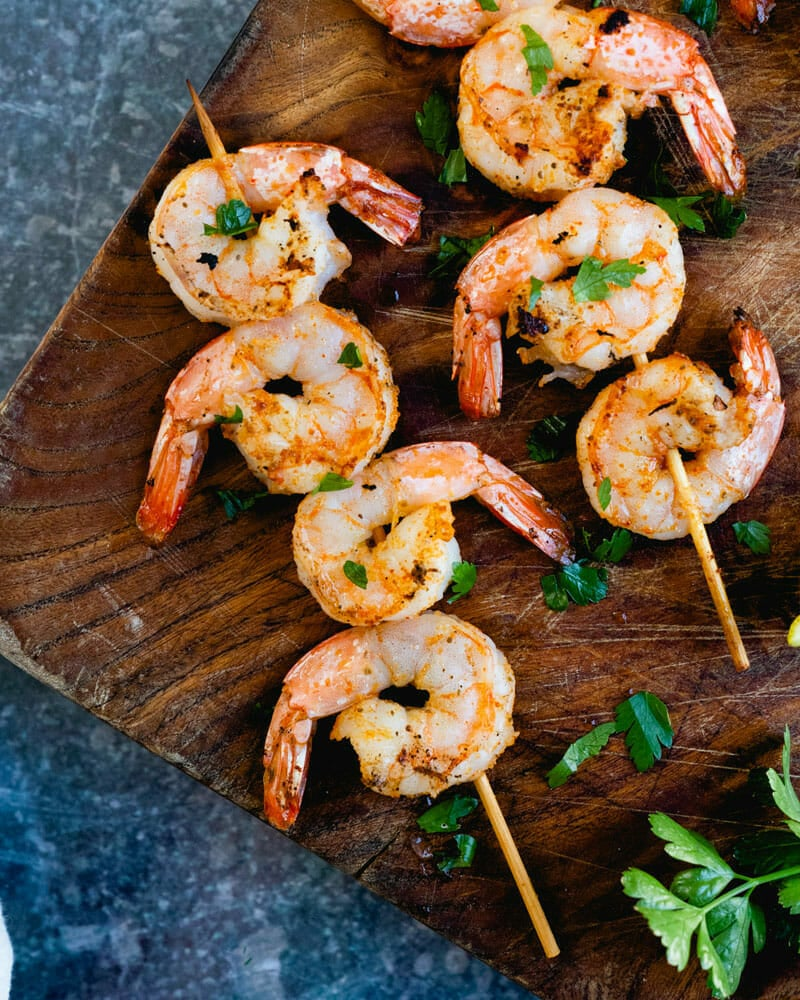

Meowscular Chef's Platter: Mojo Shrimp Skewer

Image source
Savory shrimp skewers full of flavor
Serves: 8-10
Ingredients:
- ½ Cup freshly squeezed orange juice
- ½ Cup freshly squeezed lime juice
- 1 head of garlic, peeled + crushed
- 1 Tbsp olive oil
- ½ tsp dried oregano
- 1 tsp ground cumin
- 1 tsp freshly ground black pepper
- 2 tsp kosher salt
- ½ tsp baking soda
- 1 lb or 500 g jumbo shrimp, peeled + deveined
Steps:
- Combine the orange juice, lime juice, garlic, olive oil, oregano, cumin, black pepper, and salt in a large bowl.
- Add the shrimp and cover the bowl with plastic wrap.
- Let the shrimp marinate for 30 minutes to 1 hour in the refrigerator.
- Skewer the shrimp and grill for 2-3 minutes on each side or until cooked through.
Back to main